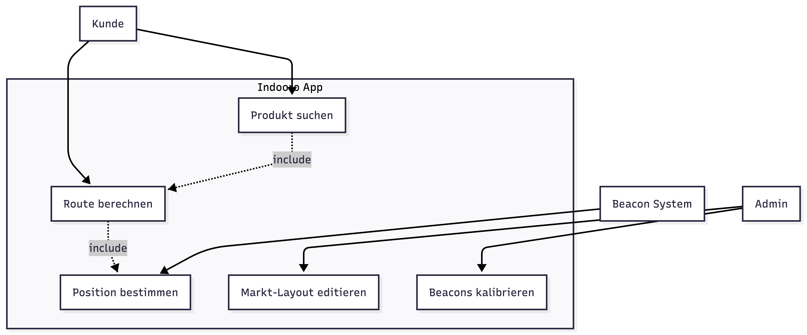
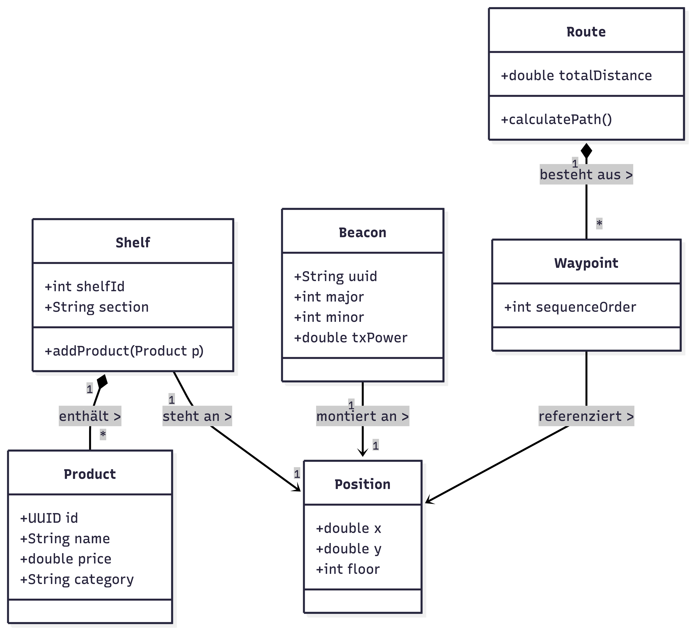
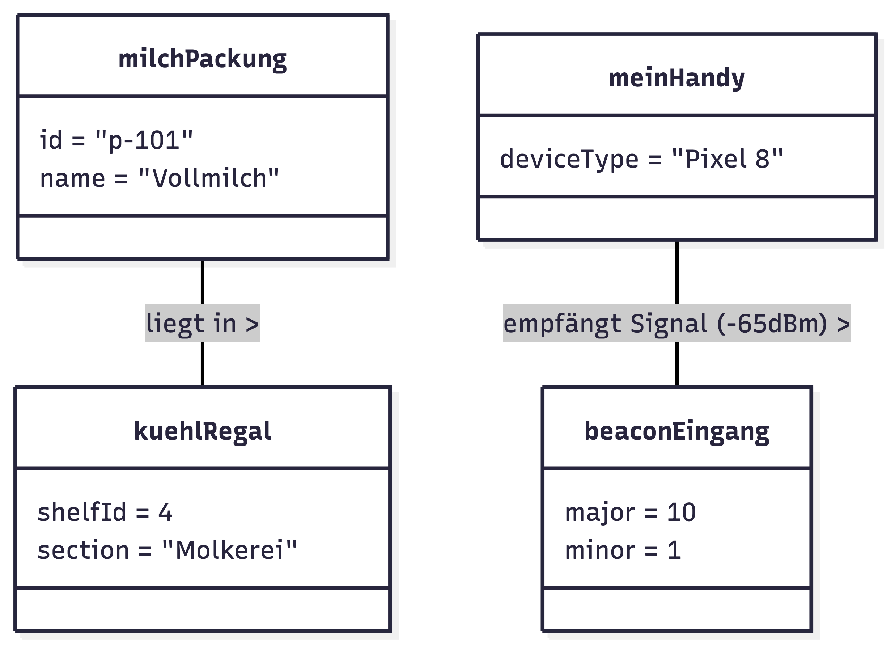

UML Modellierung
Indooro – Indoor Navigation für Supermärkte
HTL – Softwareentwicklung
Lerneinheit (20 Minuten)
Team: _______
Was ist UML?
- Unified Modeling Language
- Standard zur Beschreibung von Software-Systemen
- Visuelle Kommunikation zwischen Entwicklern
- Unabhängig von Programmiersprache
Wozu verwendet man UML?
- Systeme planen bevor Code entsteht
- Komplexität reduzieren
- Team-Kommunikation
- Dokumentation
- Architektur verstehen
Grenzen von UML
- Kein Ersatz für Code
- Runtime-Verhalten nur begrenzt sichtbar
- Kann schnell zu detailliert werden
- Pflegeaufwand
Typische UML Fehler
- Klassen ≠ Objekte
- Zu viele Beziehungen
- Falsche Vererbung
- Diagramm ohne Use-Case Bezug
Unser Projekt: Indooro
Ziel:
Navigation innerhalb eines Supermarktes
Beispiel:
- Kunde sucht Produkt
- Position wird bestimmt
- Route wird berechnet
- Produkt wird gefunden
Warum UML bei Indooro?
- Backend + App abstimmen
- Datenmodell planen
- Navigationslogik verstehen
- Use Cases ableiten
Use Case Diagramm

Klassendiagramm

Objektdiagramm

Traceability
Use Case 1: Produkt suchen
→ Klassen:
- Product
- Shelf
- RouteService
- UserPosition
Use Case 2: Route berechnen
→ Klassen:
- Beacon
- NavigationService
- Waypoint
- StoreMap
Projekt-Artefakte
- Code-Screenshot
- Datenbankschema
- UML Tool Screenshot
➡ Pflicht: 3 Belege aus Projekt / Quelle
Diagramm Review
Fehler 1: Vererbung statt Beziehung
Vorher: Beacon → Position
Nachher: Beacon hat Position
Fehler 2: Objekt als Klasse
Fehler 3: falsche Abhängigkeit
KI-resistente Aufgaben
- Diagramm begründen lassen
- Live Modellierung
- Projektbezug erzwingen
- Review & Diskussion
KI – Pro & Contra
Pro
- Schnelle Diagrammerstellung
- Syntax Hilfe
Contra
- Logische Fehler
- Blindes Übernehmen
Zukunft von UML & KI
- Text → UML automatisch
- Skizze → Code
- KI als Assistenz
- Architektur bleibt menschlich
Verwendete Prompts
| Ziel |
Prompt |
Tool |
Output |
Änderungen |
Vertrauen? |
| Use Case erstellen |
... |
ChatGPT |
... |
... |
... |
| Klassendiagramm |
... |
... |
... |
... |
... |
Quellen & Links
- OMG UML Specification
- draw.io
- PlantUML
- Mermaid
- Reveal.js
Quiz
Jetzt überprüft ihr euer UML Wissen 🙂